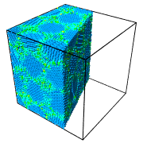
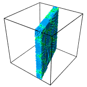

| Table of Contents | Slice | Up |
|---|---|---|
| Prev | Modifiers | Next |
| Table of Contents | Slice | Up |
|---|---|---|
| Prev | Modifiers | Next |
| Input: | Output (slab width = 0): | Output (slab width > 0): |
 |

|

|
This modifier either deletes or selects all elements on one side of an infinite cutting plane. Alternatively, the modifier can cut out a slab of a given thickness from the structure (see pictures).
The (signed) distance of the cutting plane from the origin of the simulation coordinate system, measured parallel to the cutting plane normal.
Components of the cutting plane normal vector. This vector does not have to be a unit vector. Note that you can click on the blue label next to each input field to reset the normal vector to point along the corresponding coordinate axis.
Specifies the width of the slab to cut out from the input structure. If this value is zero, which it is by default, everything on one side of the cutting plane is deleted. If the slab width parameter is set to a positive value, a slab of the given thickness is cut out.
Effectively flips the cutting plane's orientation. If the slab width parameter is zero, activating this option will remove all elements on the opposite side of the plane. Otherwise this option will let the modifier cut away a slab of the given thickness from the input structure.
This option lets the modifier select elements instead of deleting them.
Restricts the effect of the modifier to the subset of elements that are currently selected.
Lets the modifier generate polygonal geometry to visualize the plane's intersection with the simulation cell in rendered images.
The following buttons in the panel let you automatically position and align the cutting plane:
positions the plane in the center of the simulation cell. The current plane orientation is kept.
rotates the viewing direction of the active viewport such that it is parallel to the cutting plane's normal vector.
rotates the cutting plan such that its normal vector becomes parallel to the viewing direction of the active viewport.
lets you pick three spatial points in the viewports. The cutting plane will be repositioned such that it goes through all three points.
The position of the cutting plane can be animated. Use the button next to each numerical parameter field to open the corresponding keyframe animation dialog. See the animation section of this manual for more information on this topic.